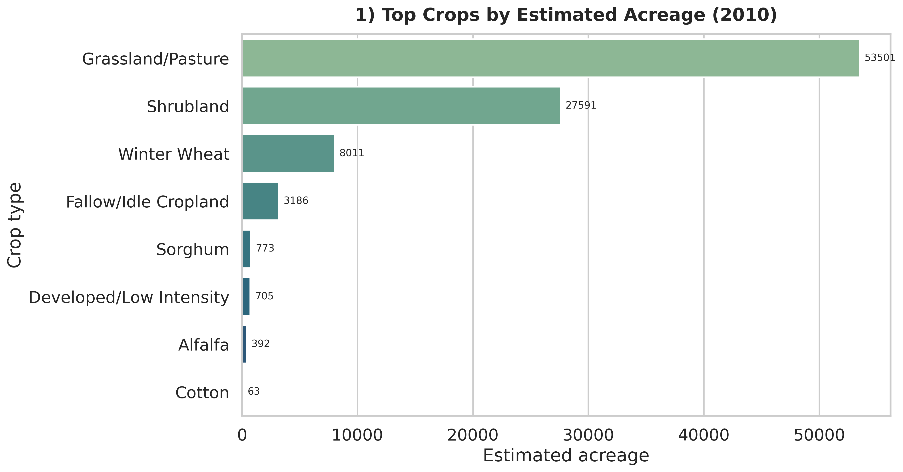
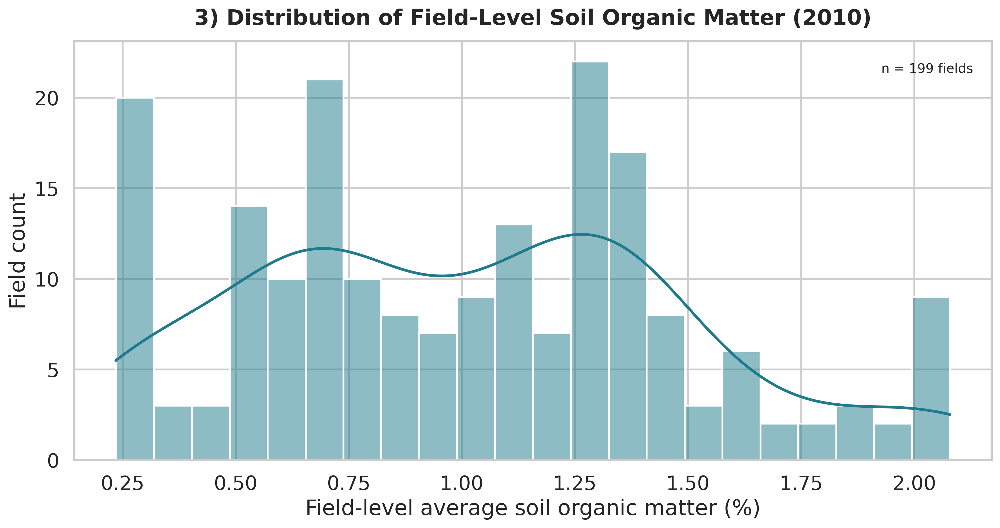
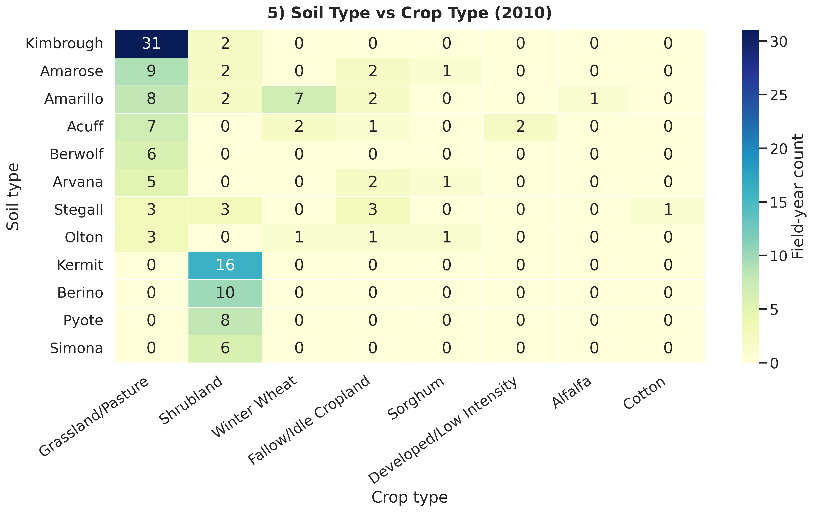
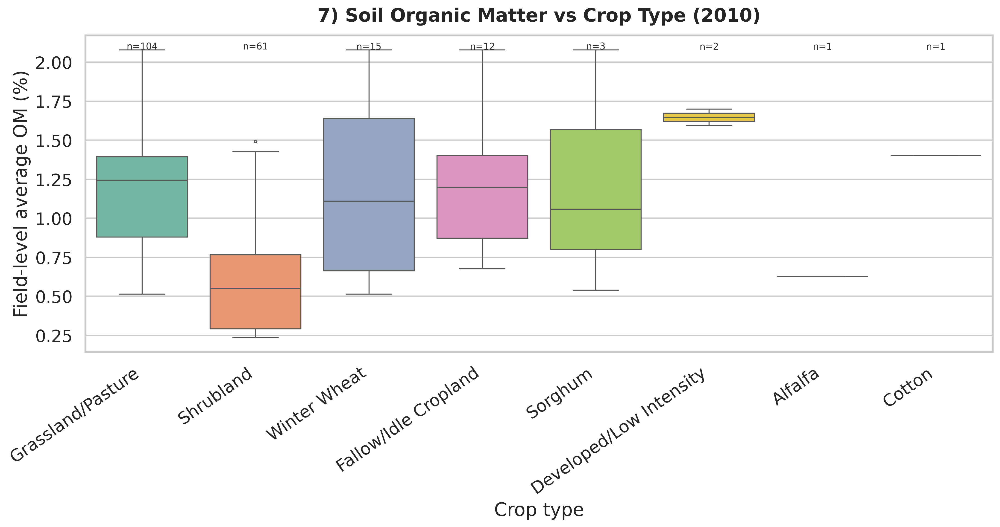

1) Crop Total Estimated Area - 2010
Estimated acreage by crop class for 2010 after exclusion filtering.

2) Crop Total Estimated Area - 2020
Estimated acreage by crop class for 2020 after exclusion filtering.

3) Soil Organic Matter Distribution - 2010
Field-level OM distribution among 2010 field records.

4) Soil Organic Matter Distribution - 2020
Field-level OM distribution among 2020 field records.

5) Soil Type vs Crop Type - 2010
Count heatmap of soil-crop combinations in 2010.

6) Soil Type vs Crop Type - 2020
Count heatmap of soil-crop combinations in 2020.

7) Soil Organic Matter vs Crop Type - 2010
OM boxplots by crop class with sample-size context.

8) Soil Organic Matter vs Crop Type - 2020
OM boxplots by crop class with sample-size context.